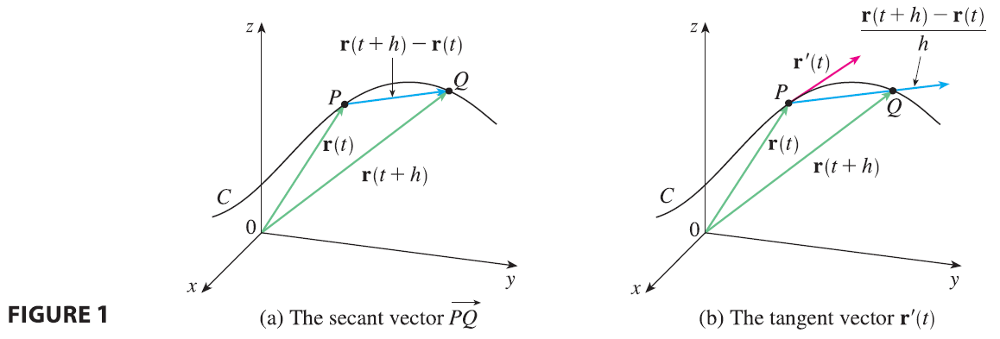

Later in this chapter we are going to use vector functions to describe the motion of planets and other objects through space. Here we prepare the way by developing the calculus of vector functions.
The derivative \(\mathbf{r}'\) of a vector function \(\mathbf{r}\) is defined in much the same way as for real-valued functions:
\[ \frac{d\mathbf{r}}{dt} = \mathbf{r}'(t) = \lim_{h \to 0} \frac{\mathbf{r}(t+h) - \mathbf{r}(t)}{h} \tag{1} \]

if this limit exists. The geometric significance of this definition is shown in Figure 1. If the points P and Q have position vectors \(\mathbf{r}(t)\) and \(\mathbf{r}(t+h)\), then \(\vec{PQ}\) represents the vector \(\mathbf{r}(t+h) - \mathbf{r}(t)\), which can therefore be regarded as a secant vector. If \(h > 0\), the scalar multiple \((1/h)(\mathbf{r}(t+h) - \mathbf{r}(t))\) has the same direction as \(\mathbf{r}(t+h) - \mathbf{r}(t)\). As \(h \to 0\), it appears that this vector approaches a vector that lies on the tangent line. For this reason, the vector \(\mathbf{r}'(t)\) is called the tangent vector to the curve defined by \(\mathbf{r}\) at the point P, provided that \(\mathbf{r}'(t)\) exists and \(\mathbf{r}'(t) \neq \mathbf{0}\). The tangent line to C at P is defined to be the line through P parallel to the tangent vector \(\mathbf{r}'(t)\). We will also have occasion to consider the unit tangent vector, which is
\[ \mathbf{T}(t) = \frac{\mathbf{r}'(t)}{|\mathbf{r}'(t)|} \]
The following theorem gives us a convenient method for computing the derivative of a vector function \(\mathbf{r}\): just differentiate each component of \(\mathbf{r}\).
Theorem 2 If \(\mathbf{r}(t) = \langle f(t), g(t), h(t) \rangle = f(t)\mathbf{i} + g(t)\mathbf{j} + h(t)\mathbf{k}\), where f, g, and h are differentiable functions, then \[ \mathbf{r}'(t) = \langle f'(t), g'(t), h'(t) \rangle = f'(t)\mathbf{i} + g'(t)\mathbf{j} + h'(t)\mathbf{k} \]
PROOF \[ \mathbf{r}'(t) = \lim_{\Delta t \to 0} \frac{1}{\Delta t}[\mathbf{r}(t+\Delta t) - \mathbf{r}(t)] \] \[ = \lim_{\Delta t \to 0} \frac{1}{\Delta t}[\langle f(t+\Delta t), g(t+\Delta t), h(t+\Delta t) \rangle - \langle f(t), g(t), h(t) \rangle] \] \[ = \lim_{\Delta t \to 0} \left\langle \frac{f(t+\Delta t) - f(t)}{\Delta t}, \frac{g(t+\Delta t) - g(t)}{\Delta t}, \frac{h(t+\Delta t) - h(t)}{\Delta t} \right\rangle \] \[ = \left\langle \lim_{\Delta t \to 0} \frac{f(t+\Delta t) - f(t)}{\Delta t}, \lim_{\Delta t \to 0} \frac{g(t+\Delta t) - g(t)}{\Delta t}, \lim_{\Delta t \to 0} \frac{h(t+\Delta t) - h(t)}{\Delta t} \right\rangle \] \[ = \langle f'(t), g'(t), h'(t) \rangle \]
EXAMPLE 1 (a) Find the derivative of \(\mathbf{r}(t) = (1+t^3)\mathbf{i} + te^{-t}\mathbf{j} + \sin 2t \mathbf{k}\). (b) Find the unit tangent vector at the point where \(t=0\).
EXAMPLE 2 For the curve \(\mathbf{r}(t) = \sqrt{t}\mathbf{i} + (2-t)\mathbf{j}\), find \(\mathbf{r}'(t)\) and sketch the position vector \(\mathbf{r}(1)\) and the tangent vector \(\mathbf{r}'(1)\).
EXAMPLE 3 Find parametric equations for the tangent line to the helix with parametric equations \[ x = 2\cos t \quad y = \sin t \quad z=t \] at the point \((0, 1, \pi/2)\).